Indiana Jones And The Last Crusade
Main Content
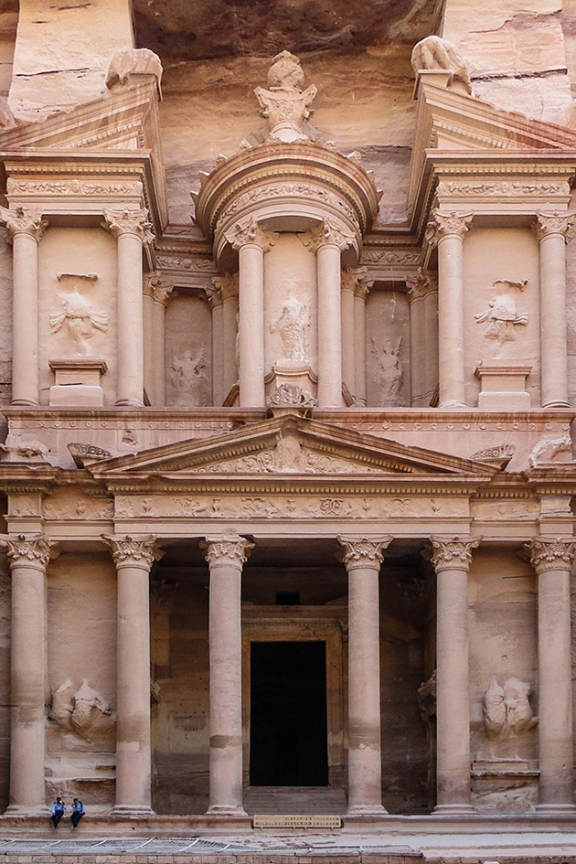
Discover all the places where Indiana Jones And The Last Crusade (1989) was filmed in Jordan, Spain, Italy; in the USA around Utah, Colorado, California and Texas; and around the UK in Buckinghamshire, Hertfordshire, Essex and London.
Third, and arguably best, of the Indiana Jones movies, as Indy discovers from his father the value of “shelf reliance”. Wise words.
Last Crusade certainly does its share of globetrotting – even if not all of the filming sites are where they claim to be.
The prologue itself, establishing all the traits of the young Indy (River Phoenix) and set in ‘Utah, 1912’, was filmed in two different US States.
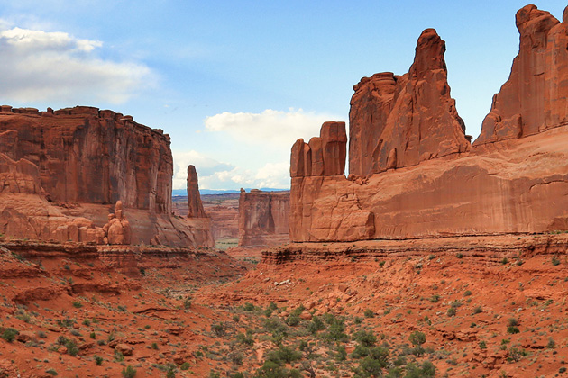
The astonishing sandstone landscapes, through which Indy’s scout troop rides, really is Utah of course. It’s Arches National Park covering 120 square miles in Southern Utah. It's 'high desert' so the climate is one of very hot summers and cold winters, with temperatures liable to vary wildly in a single day.
The Park’s Visitor Center can be found on US-191about five miles northwest of Moab and, fortunately, most of the fantastic rock formations seen during the credits sequence can be found within a short drive from this entrance.
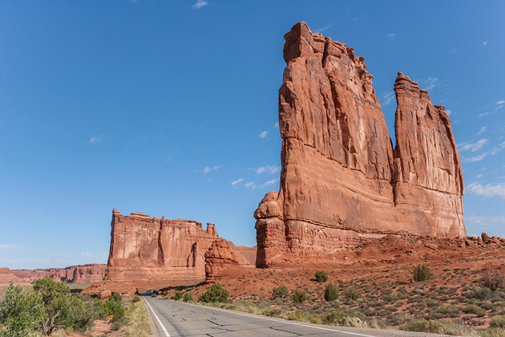
From the Center, take Arches Scenic Drive north and, after about four miles, you’ll come to the mighty blocks of Courthouse Towers and The Organ on your right. To your left, you’ll see that trio of what look like sculpted figures, known as the Three Gossips.
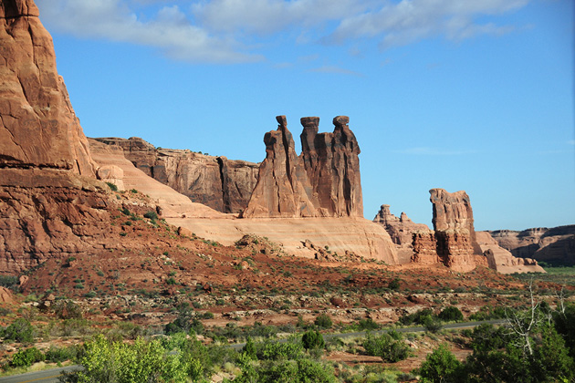
A little more than five miles further on, is the single teardrop-shaped rock perched precariously on a narrow stem and called, for obvious reasons, Balanced Rock.
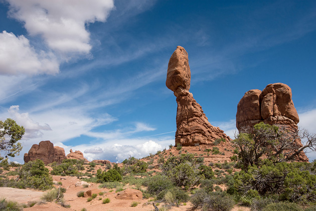
Just past this, turning right onto The Windows Road will eventually take you to the amazing Double Arch, two natural bridges, which is where the scouts dismount. Here you’ll also find the entrance to the cave where Indy rescues the ‘Cross of Coronado’ from unscrupulous treasure hunters.
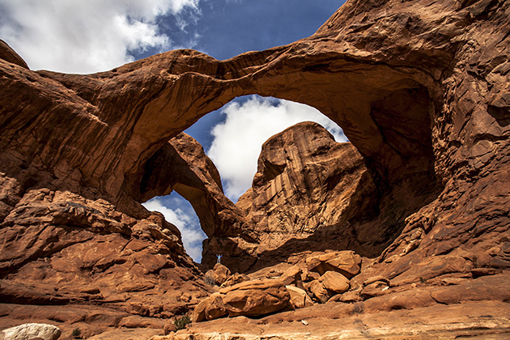
As the looters give chase and Indy clambers onto a horse, you’ll notice that the wild rock shapes almost instantly disappear, giving way to flat, scrubby grassland.
That’s because the following sequence aboard the passing circus train was filmed on the Cumbres & Toltec Scenic Railroad in Southern Colorado. Built in 1880 to serve the silver mining area of the San Juan Mountains, and little changed since, the Railroad is a 64-mile, fully operational steam railroad, jointly owned by the states of Colorado and New Mexico since 1970.
And it’s a railroad you can travel, too. The return journey, taking a whole day, runs from Antonito, Route 285, south of Alamosa in southern Colorado, 30 miles southwest through the San Juan Mountains to Chama in northern New Mexico.
When Indy finally makes it home, his town does turn out to be the railroad’s terminus, Antonito, in Conejos County. The modest little home where his distracted Dad requires him to count in Greek is 502 Front Street at East 5th Avenue. The really good news? The enterprising owners of the house have turned it into the Indiana Jones Bed & Breakfast.
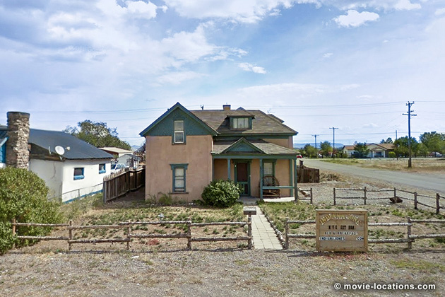
Moving on to ’1938’, the grown up Indiana Jones (Harrison Ford) is now teaching at ’Barnett College, New York’. The film was based at Elstree Studios in Hertfordshire, so a few locations can be found in the UK and the college is one of them.
It’s Rickmansworth Masonic School, Chorleywood Road (A404) just a couple of minutes north of Rickmansworth Station (rail: London Marylebone Station), Hertfordshire. The school had previously supplied the college interiors for Raiders Of The Lost Ark.
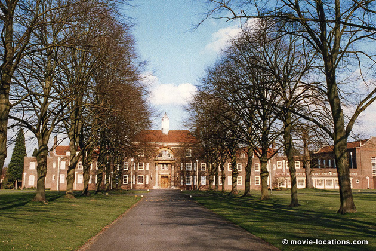
From here, Indy finds himself whisked away to the smart penthouse of collector Walter Donovan (Julian Glover) who offers tantalising hints as to the whereabouts of the Holy Grail but – more importantly – informs Indy that, following these leads, his father has gone missing.
And, yes, Indy discovers that his father’s house is empty and ransacked. What could look more like Upstate New York than the white clapboard house in ‘Fermdale, NY’?
In fact it's in North London. It's Park Lodge, Wills Grove, Mill Hill, London NW7. Please remember this is a private home and respect the residents' privacy.
Coincidentally, it's only a few minutes' walk northwest of the, since demolished, Institute for Medical Research which provided the exterior of 'Arkham Asylum' in Christopher Nolan's Batman Begins.
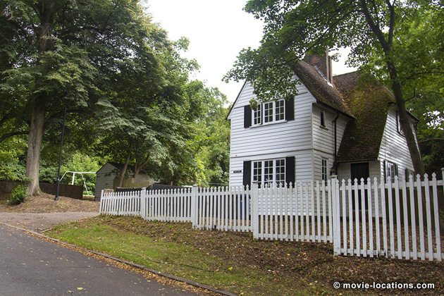
Guided by his father’s journal, Indy along with Marcus Brody (Denholm Elliott) travel immediately to Venice in search of the stone which might reveal the Grail’s whereabouts.
They’re met by Dr Elsa Schneider (Alison Doody) on the Fondamenta Salute, on the south bank of the entrance to the Canal Grande across from the Piazza San Marco.
It seems only a short walk, but it’s quite a way to the west find the ‘Biblioteca di S Barnaba’, the church converted into a library where the stone tablet may possibly be hidden. The church hasn’t in fact been converted, it remains Church of San Barnaba, Campo San Barnaba on the Fondamenta Gherardini in the pleasantly laidback Dorsoduro district. If you want to see the real interior, the 1749 church is open daily from 7.30am to noon and 4.30pm to 7pm.
Incidentally, Campo San Barnaba is the spot where Katherine Hepburn famously tumbles into the canal in David Lean's Summer Madness. As Steven Spielberg is such a Lean fan, this hardly seems to be coincidence. The same piazza is featured again in the 2003 remake of The Italian Job.
The tablet is found in the tomb of Sir Richard beneath the library floor, but it seems the interlopers are not welcome. Escaping through a manhole cover in Campo San Barnaba (yes, that was faked), they’re chased to the city’s docks.
We’re suddenly back in the UK. A small section of ‘Calle di S Lucia’ was constructed on the waterfront of Tilbury Docks in Essex, where the the leap into a speedboat and the ensuing chase were filmed. Just like the Utah rocks, the palazzos and campaniles of Venice suddenly disappear as the boats negotiate cargo ships and cranes.
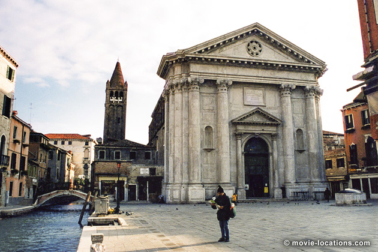
Once the chase ends, the real Venice reappears as Indy discovers that the apparent assailants are a secret brotherhood sworn to protect the secrets of the Grail.
It’s on a pier in front of the 17th century Palazzo Barbaro, on the Canal Grande at Ponte dell’Accademia, that the leader Kazim (Kevork Malikyan) reveals that Nazis too are after the Grail for their own nefarious ends, and that Professor Jones is being held by them at the ‘Castle of Brunwald’ on the Austrian-German border.
The Palazzo Barbaro itself featured in Vampire In Venice (the 1986 sequel to Werner Herzog’s Nosferatu, Phantom der Nacht) as well as Richard Attenborough’s In Love and War, with Chris O'Donnell as the young Ernest Hemingway and Iain Softley’s Wings Of The Dove (author Henry James actually stayed here).
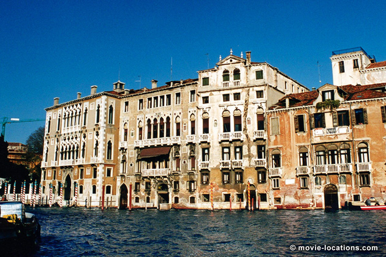
As Indy and Elsa go to find the professor, Brody – realising that the the road to the Grail starts from ‘Iskenderun’ in the ‘Republic of Hatay’ – follows a different lead.
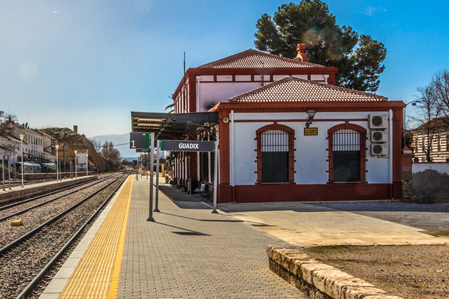
Hatay was real – a small sultanate south of Turkey and north of Syria, and Iskenderun is now a Mediterranean port – but the film uses Southern Spain. ‘Iskenderun’ railway station, where Dr Brody is besieged by beggars and almost immediately abducted by Nazis, is Guadix Station, Guadix, about 30 miles east of Granada on the N342.
The castle at ‘Brunwald’ turns out to be little more than sets built at Elstree, though the long-shot is of Schloss Bürresheim, a medieval castle northwest of Mayen in Germany, heavily enhanced with pre-digital matte painting. Built on a rock in the Eifel Mountains above the River Nette, it's now a museum.
Indy manages to rescue Jones Sr (Sean Connery) and the two escape from the Nazis in a motorbike and sidecar. Their destination is Berlin, where the Professor’s precious journal has ended up.
The classically grand setting for the ‘Berlin’ rally, where Indy manages to get the Führer’s autograph, is the prestigious Stowe School in Buckinghamshire. This former home of the Duke of Buckinghamshire, set in grounds landscaped by Capability Brown, is four miles north of Buckingham town itself (a few miles west of Milton Keynes), and usually open to the public for the first two weeks in April and from July through to the beginning of September.
Stowe also appears as the school where Rohan (Hrithik Roshan) wins the crucial cricket match at the beginning of 2001 Hindi smash Kabhi Khushi Kabhie Gham... Its grounds are seen in 1999 Bond movie The World Is Not Enough, with Pierce Brosnan, and the 2010 version of The Wolfman, with Benicio Del Toro.
The school's interior can be seen in the 1998 film of 60s cult TV show The Avengers and in Matthew Vaughn's 2007 fantasy Stardust.
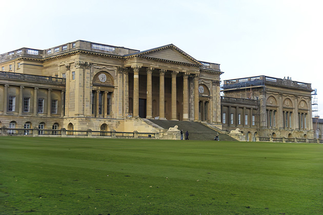
Now needing to make a hasty getaway, the Joneses take the first flight out of Germany, which happens to be via airship.
‘Berlin Airport' is a conflation of two locations thousands of miles apart. The exterior is the sleek art deco Administration Building on Treasure Island, a man-made landform across in San Francisco Bay, across from the city of San Francisco, California, built for the 1939 Golden Gate International Exposition.
It was later used as a naval base, and more recently the island’s hangars have found regular use as film soundstages for such productions as Ang Lee's 2003 Hulk and 1997 Robin Williams comedy Flubber.
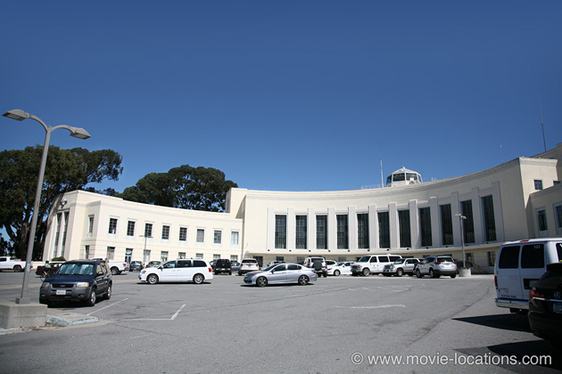
The ‘airport’ interior is in London – it's the brutalist 1920s architecture of Lawrence Hall, originally one of the two Royal Horticultural Halls, Greycoat Street at Elverton Street, Westminster, SW1.
The hall, which was leased to Westminster School in 2011, also masqueraded as 'Berlin Airport' in the misfired 1997 version of The Saint, with Val Kilmer.
Its severe lines make it the ideal place for scary fascist gatherings, too. It's here that loopy rockstar Pink (Bob Geldof) presides over the inexplicably sinister rally in Alan Parker's film of Pink Floyd The Wall, and that Richard (Ian McKellen) is offered the crown in Richard Loncraine's imaginative 30s-set Richard III.

When the airship turns to head back to 'Berlin', it’s time to commandeer the tiny bi-plane moored beneath the ship.
After an aerial dogfight, the pair manage to crash-land the plane and now help themselves to a car, still pursued by airborne Nazis. The plane/car chase – and the later tank chase – were filmed in the desert areas east of Almería, Southeast Spain. The Tabernas Desert and the area around here are familiar territory, with a history going back to David Lean's Lawrence of Arabia and Sergio Leone’s classic Spaghetti Westerns.
For more precise details of the exact shooting locations of the chase sequences, take a look at Alex Hogg's excellent Indiana Jones and the Last Crusade Ultimate Location Travel Guide.
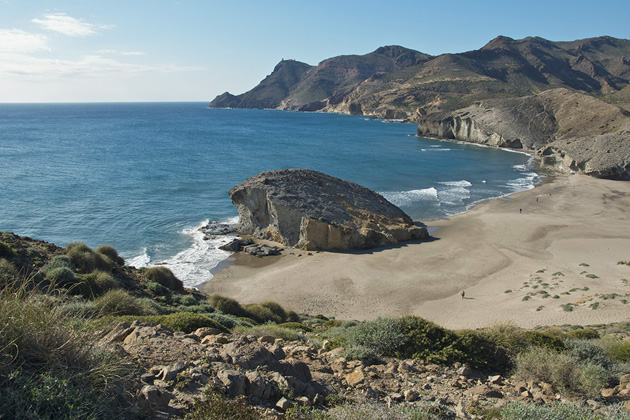
Once the car, too, has been written off, the Joneses find themselves on a rocky beach where Jones Sr, remembering his Charlemagne, makes ingenious use of his brolley to panic a flock of seabirds into the engines of a last remaining plane.
The curving beach with its single huge volcanic boulder is Playa De Monsul, with its striking volcanic rock, Punta de la Peineta, in the Cabo de Gata-Níjar Natural Park, a few miles east of Almería on the coast of southeast Spain.
The beach is three miles southwest of San José. There’s a small parking lot, but it’s actually cheaper to take a shuttle bus from the town.
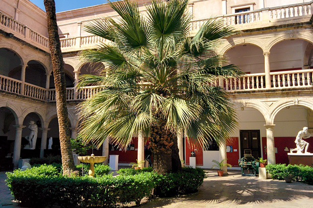
Donovan has meanwhile teamed up with the Nazis and made it to 'Iskenderun' where he trades his Rolls Royce to the Sultan for the use of soldiers and that tank. It had been intended to film the Sultan's palace courtyard in the grand Alhambra palace at Granada, but driving a Rolls Royce into its historic Court of the Lions was ruled out.
Imaginatively, they settled on the courtyard of the Escuela de Arte de Almería (School of Arts and Crafts), Plaza Pablo Cazard in Almería itself, which is housed in what was once an old convent.
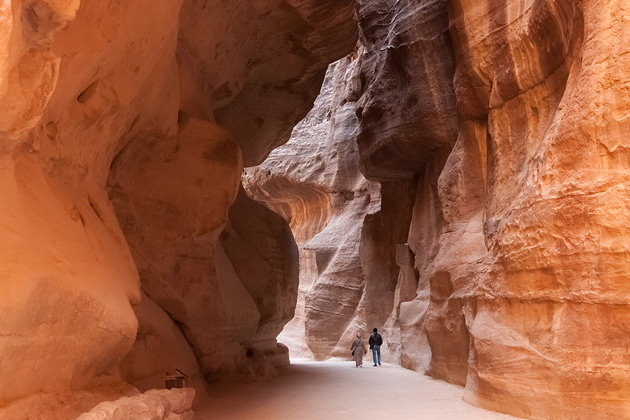
The Grail, it turns out, resides in the ‘Canyon of the Crescent Moon’, in actuality, Al Khazneh, the so-called ‘Treasury’ of the rock city of Petra in the Edom Mountains of southwest Jordan.
Petra is at Wadi Musa, a three-hour drive or bus-ride from the Jordanian capital of Amman (though you can reach it more easily from Aqaba or from Eilat in Israel), at the end of a three-quarter-mile trek (on foot, camel or horse) through the Siq, a narrow rock fissure in the cliffs.
The canyon is seen again in Stephen Sommers’ 2001 The Mummy Returns, and another part of the Petra complex houses the ‘Tomb of the Primes’ in Michael Bay’s Transformers: Revenge Of The Fallen.
There’s still one more location, which you might have missed. As the four ride off into the sunset, that one final shot, amazingly, was filmed at the Figure 3 Ranch at the Palo Duro Canyon, southeast of Amarillo, Texas. I defy anyone to pinpoint the precise site of the flat featureless landscape seen only in silhouette.
Do you think that’s really Ford, Connery, Elliott and Rhys-Davies out in Texas, or do you think they might have used stand-ins?
• Many thanks to Oliver Krendel, Mike Jordan and Barry Winger for help with this section.
Visit Info
Visit The Film Locations
Utah
Visit: Utah
Visit: Moab
Visit: Arches National Park, Hwy 191, five miles north of Moab (tel: 435.719.2299)
Colorado
Visit: Colorado
Visit: the Cumbres & Toltec Scenic Railroad
California
Visit: California
Italy
Visit: Italy
Visit: Venice
Flights: Venice Marco Polo Airport, Via Galileo Galilei, 30/1, 30173 Venezia (tel: +39.041.260.6111)
Jordan
Visit: Jordan
Flights: Queen Alia International Airport, 30 km south of Amman
Visit: Petra, Wadi Musa
Bus: JETT (Jordan Express Tourist Transportation) buses connect to Amman (about 3 hours) and Aqaba via the Desert Highway
Spain
Visit: Spain
Visit: Almería
Flights: Almería Airport, Carretera Níjar, Km 9, 04130 Almería (tel: +34.902.40.47.04)
Visit: the Cabo de Gata-Níjar Natural Park
UK | Buckinghamshire
Visit: Buckinghamshire
Visit: Stowe School, Buckingham MK18 5EH
UK | Hertfordshire
Visit: Hertfordshire
UK | Essex
Visit: Essex
UK | London
Flights: Heathrow Airport; Gatwick Airport
Visit: London
Travelling: Transport For London